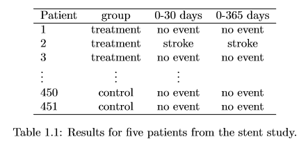
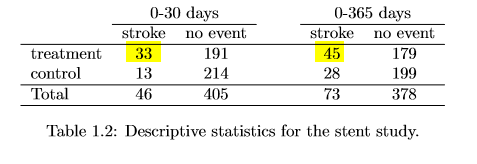

Open Intro Statistics Case Study
This blog post shows a process of statistical analysis to solve Data related problem.
Case study: Process of Statistical Investigation:
- Identify a question or problem.
- Collect relevant data on the topic.
- Analyze the data.
- Form a conclusion.
1. Identify a question or problem: Does the use of stents reduce the risk of stroke?
Stents are devices put inside blood vessels that assist in patient recovery after cardiac events and reduce the risk of an additional heart attack or death. An experiment that studies effectiveness of stents in treating patients at risk of stroke.
2. Collect relevant data on the topic: Treatment and Control Group
Each volunteer patient(of 451) was randomly assigned to one of two groups:
- Treatment group(224) - Patients in the treatment group received a stent and medical management. The medical management included medications, management of risk factors, and help in lifestyle modification.
- Control group(227) - Patients in the control group received the same medical management as the treatment group, but they did not receive stents.
A Data Table and Findings:
Considering data from each patient individually would be a long, cumbersome path towards answering the original research question. Instead, performing a statistical data analysis allows us to consider all of the data at once.
|  |  |
3. Analyze the data: Summarizing Stats
A summary statistic is a single number summarizing a large amount of data. For instance, the primary results of the study after 1 year could be described by two summary statistics: the proportion of people who had a stroke in the treatment and control groups.
- Proportion who had a stroke in the treatment (stent) group: 45/224 = 0.20 = 20%.
- Proportion who had a stroke in the control group: 28/227 = 0.12 = 12%.
- First, it is contrary to what doctors expected, which was that stents would reduce the rate of strokes.
- Second, it leads to a statistical question: do the data show a “real” difference between the groups?.
4. Form a conclusion: "Do the data show a “real” difference between the groups?"
Random Fluctuation: Suppose you flip a coin 100 times. While the chance a coin lands heads in any given coin flip is 50%, we probably won’t observe exactly 50 heads. This type of fluctuation is part of almost any type of data generating process. It is possible that the 8% difference in the stent study is due to this natural variation. However, the larger the difference we observe (for a particular sample size), the less believable it is that the difference is due to chance. So what we are really asking is the following: is the difference so large that we should reject the notion that it was due to chance?
Be careful: to not generalize the results of this study to all patients and all stents. This study looked at patients with very specific characteristics who volunteered to be a part of this study and who may not be representative of all stroke patients.